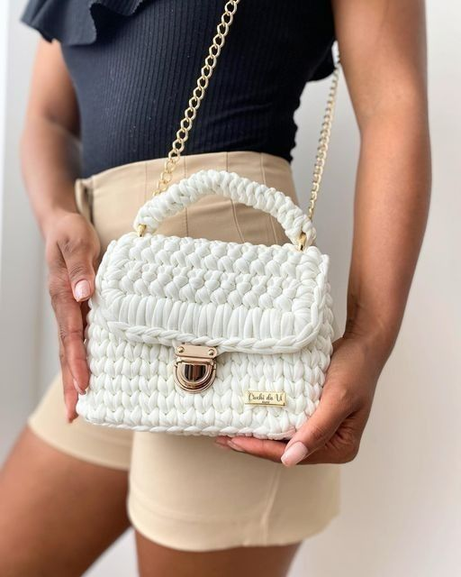

Abreviações básicas em português
As receitas de crochê utilizam abreviações para economizar espaço e tornar as instruções mais concisas. Aqui estão as mais comuns:
- corr - Correntinha
- pb - Ponto Baixo
- pa - Ponto Alto
- mpa - Meio Ponto Alto (Ponto Médio)
- pbx - Ponto Baixíssimo
- aum - Aumento (geralmente 2 pontos no mesmo lugar)
- dim - Diminuição (geralmente 2 pontos juntos)
- carr - Carreira
- pt(s) - Ponto(s)
- rep - Repetir
Abreviações em inglês
Muitas receitas estão em inglês, então é útil conhecer também estas abreviações:
- ch - Chain (Correntinha)
- sc - Single Crochet (Ponto Baixo)
- dc - Double Crochet (Ponto Alto)
- hdc - Half Double Crochet (Meio Ponto Alto)
- sl st - Slip Stitch (Ponto Baixíssimo)
- inc - Increase (Aumento)
- dec - Decrease (Diminuição)
- rnd - Round (Carreira em círculo)
- row - Row (Carreira em linha)
- st(s) - Stitch(es) (Ponto(s))
Dica importante
Crie um cartão de referência com as abreviações mais comuns e mantenha-o junto aos seus materiais de crochê para consulta rápida.